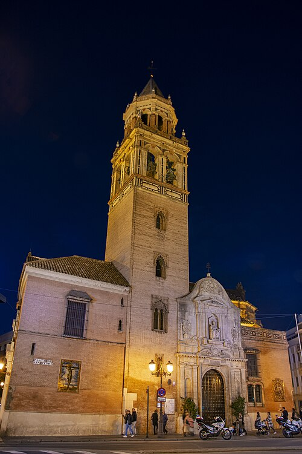

¡Andalucía, nuestro patrimonio!
Investigamos el patrimonio cultural de nuestra localidad
- Duración
- 2-3 sesiones 60'
- Agrupamiento
- Grupos de 4
¿Qué vamos a hacer?
Es hora de pensar en nuestro producto final: la creación de un vídeo turístico de nuestro pueblo. Para ello, necesitamos ir recopilando toda la información necesaria.
En grupos de 3 o 4 personas, os convertiréis en investigadores del patrimonio de vuestro pueblo o ciudad. Buscaréis lugares de interés turístico: monumentos, rincones con historia, tradiciones curiosas o espacios naturales singulares. Recopilaréis imágenes, datos históricos y curiosidades en un documento compartido de Google Docs. Al final, decidiréis qué lugares merecen aparecer en vuestro vídeo-guía turística.
Paso 1: Formad el grupo y repartid tareas
Cada grupo debe tener entre 3 y 4 personas. Para que el trabajo sea ágil, repartid roles:
| Rol | Qué hace |
| Coordinador/a - alumno ayudante tecnológico | Se asegura de que todos participen, controla los tiempos y sube el documento final. Además, vigila el uso correcto de los recursos tecnológicos y ayuda en la solución de problemas |
| Buscador/a de información | Investiga en Internet datos históricos, fechas, anécdotas y curiosidades |
| Buscador/a de imágenes | Localiza fotos libres de derechos o propias de los lugares (también puede hacer fotos con el móvil) |
| Redactor/a (opcional) | Escribe los textos en el documento compartido con buena ortografía y claridad |
Paso 2: Elegid los lugares a investigar (mínimo 3, máximo 5)
No hace falta que investiguéis 20 lugares. Con 3 o 4 sitios bien documentados es suficiente. Pensad en lugares que:
- Tengan interés histórico (una iglesia antigua, un castillo, un puente romano, una calle con solera).
- Sean atractivos para un turista (una plaza bonita, un mirador, un parque singular).
- Tengan una historia curiosa o una leyenda (eso siempre gusta).
- Representen la identidad de vuestro pueblo (el mercado, la fábrica antigua, el lavadero, la fuente donde se reunían los vecinos).
Ejemplos posibles (adapta a tu localidad):
- La iglesia parroquial (¿de qué año es? ¿Quién la mandó construir? ¿Tiene alguna talla especial?)
- El ayuntamiento viejo o la plaza principal.
- Un molino, una almazara o una antigua fábrica.
- Un paraje natural (río, montaña, sendero, mirador).
- Un museo local (aunque sea pequeño).
- Una tradición o fiesta (si es patrimonio inmaterial, también cuenta: la semana santa, la romería, la feria, una receta típica…).
Paso 3: Investigad con criterio (fuentes fiables)
Para cada lugar, responded a estas preguntas:
- ¿Dónde está? (calle, plaza o paraje)
- ¿Qué es? (iglesia, castillo, puente, molino, plaza...)
- ¿De qué época es? (¿romano, medieval, del siglo XVIII, del siglo XX?)
- ¿Por qué es importante? (historia, arquitectura, tradición)
- Una curiosidad o anécdota (algo que no sepa todo el mundo).
¿Dónde buscar información fiable?
Recuerda, que en nuestro Padlet, tenemos ejemplos de páginas donde buscar información de la localidad, como es el caso de la web del Ayuntamiento. Pero también existen otras, por lo que yo te recomiendo:
- Web del Ayuntamiento de tu localidad. Oficial, datos contrastados
- Wikipedia: suele haber mucha información de las localidades o pueblos
- Blog de turismo o cultura local (si es de alguien conocido). Puede tener curiosidades y anécdotas
- Libros de historia local (si los tiene en casa o en la biblioteca)
- Preguntar a familiares mayores (fuente oral). ¡Válida también! Pero anota quién te lo contó
- Redes sociales como de cuentas de Instagram de instituciones municipales o de cuentas verificadas de viajeros, historiadores, guías turísticos...
¡NO USAR! Webs con faltas de ortografía o publicidad excesiva.
Paso 4: Recopilad imágenes (¡con derechos de autor!)
Para cada lugar, necesitaréis al menos una imagen. Podéis conseguirla de tres formas:
- Hacer la foto vosotros mismos (mejor opción: es vuestra y no tenéis que pedir permiso).
- Buscar en bancos de imágenes libres -algunos están en nuestro Padlet- (Pixabay, Unsplash, Wikimedia Commons). Comprobad que la licencia permite usarla sin pagar y citando al autor.
- IMPORTANTE: Nunca cojas una imagen de Google Imágenes sin mirar la licencia. Si la usas sin permiso, estás violando los derechos de autor. En la tarea 3 ya visteis algo de esto.
Cómo citar una imagen correctamente:
"Fotografía de la Iglesia de San Pedro, autor: María Pérez. Licencia: CC BY-SA 4.0. Fuente: Wikimedia Commons."
Si la foto es tuya: "Fotografía propia, 2025."
Paso 5: Organizad la información en un documento de Google Docs
Crearéis un documento compartido en cada grupo, a través de una tarea asignada en Classroom, con el nombre "El patrimonio de nuestro pueblo". En ese documento, organizad la información con este formato:

Ejemplo simulado.
- Título del lugar (ej. Iglesia de San Pedro)
- Ubicación: Calle Real, 15.
- Época: Siglo XVI, reformada en el XVIII.
- ¿Por qué es importante?: Es la iglesia más antigua del pueblo. En su interior se conserva un retablo barroco del escultor local Juan Pérez.
- Curiosidad: Dicen que debajo del altar hay un túnel secreto que conectaba con el castillo (aunque nadie lo ha demostrado).
- Imagen: [aquí pegamos la foto o el enlace]
Fuente de la imagen: Fotografía propia de Alba Gómez, 2025.
(Haced una entrada por cada lugar elegido.)
Paso 6: Dadle una vuelta: ¿qué lugares son los mejores para el vídeo?
Ahora que tenéis toda la información, el grupo debe decidir:
¿Qué lugares descartamos? (quizá uno es muy aburrido o no tenemos buenas fotos)
¿Qué lugares destacamos? (los más bonitos, los que tienen mejor historia)
Guardad esta decisión: será la base para el guion de la Tarea 6 y el vídeo de la Tarea 7.